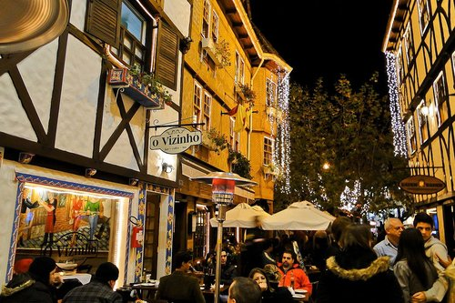

História da Cidade
Campos do Jordão, considerada a “Suíça brasileira”, é um dos mais famosos destinos de inverno no Brasil. A cidade encanta pelo clima, natureza e é famosa por ser um destino luxuoso, badalado e caro. Mas esse mito está prestes a ser desfeito. Não é preciso gastar muito para conhecer e aproveitar Campos do Jordão.

Tempo em Campos do Jordão
Agora
Campos do Jordão
umidade